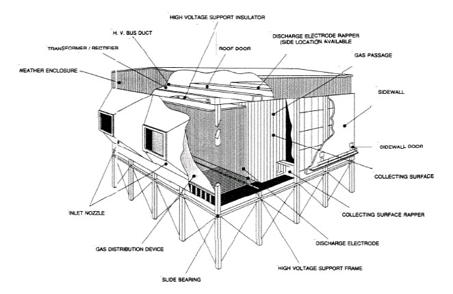

实时挑战 · 静电收集
别让它们穿过出口。
风速在变。边观察，边调电场，把 100 颗负电粉尘留在侧壁亮区。
90/100收进亮区，且零逃逸
气流速度 0.30 m/s →
亮区 0错位 0逃逸 0
跟随一颗粉尘 —m/s等待释放
✓
拖动金色把手。向上推，负电粉尘向亮区偏转。
E 电场方向F = qE 负粉尘受力，方向相反拖空白旋转 · 滚轮缩放 · 过程放慢 3 倍
它真的用在哪里？
让烟气走，让粉尘留下。
静电除尘器先让粉尘带电，再用电场把它们推向收集极。气流把粉尘带向出口，电场把粉尘带向侧壁：两个方向一起决定落点。
这关把收集极缩成了一段亮区。风速变快，同样的电场来不及把粉尘推到壁面；增强电场，就能更快偏转。
进入真实设备：照片、剖面与收集过程 ↗
这里计算了什么？
q 是粉尘电荷量，约 −2 × 10−16 C；m 是质量，约 7.4 × 10−14 kg。粒子半径约 2 μm，画面为便于观察放大了粒子。
每颗粉尘满足 m dv/dt = qE + 6πηr(u − v) + mg。u 是气流速度，v 是粉尘速度；η 是空气黏度，r 是粒子半径。电场力、空气阻力与重力一起改变速度。画面箭头分别显示 E 与电场力 qE，未把它们混同于合力。
两壁间按均匀电场近似，忽略边缘效应。电场由你实时改变，采用准静态近似，忽略感应磁场、辐射、空间电荷、电晕充电过程与湍流。粉尘已带电，撞壁后按完全捕集处理。实际除尘器还有脱附与振打等过程。
亮区与手动调场是教学挑战，不是工业控制规程。这里调的是电场；磁场的洛伦兹力垂直于速度，单独不改变粒子动能。